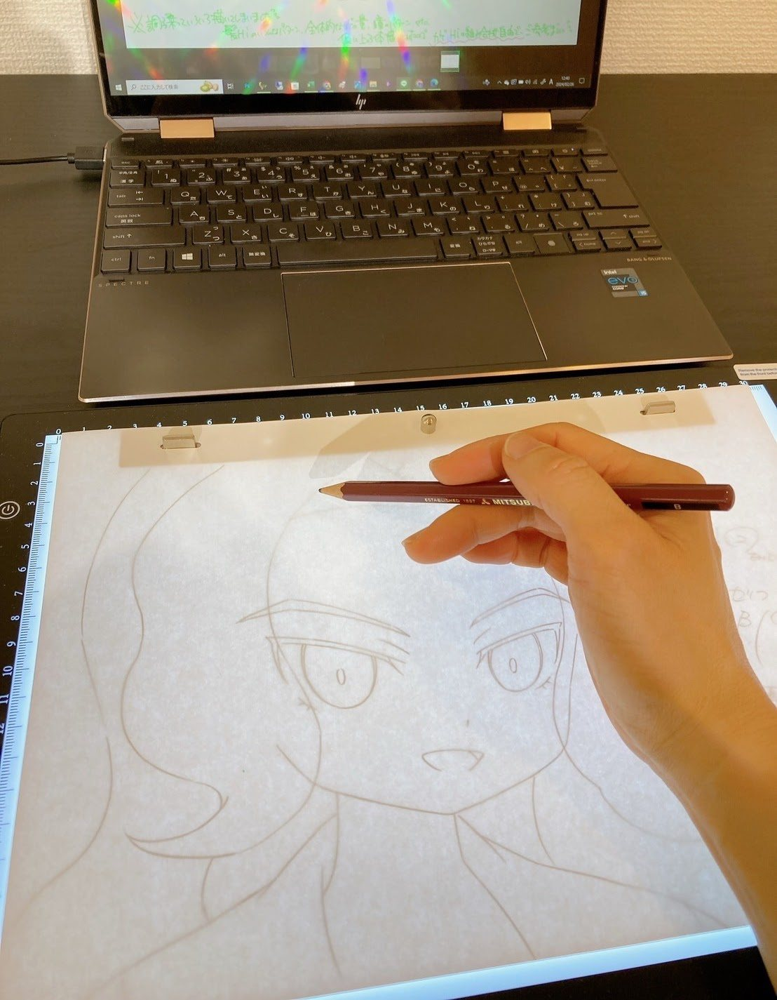
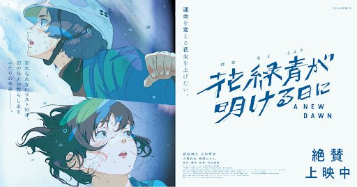
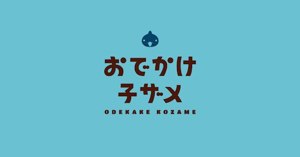

01
量と納期を、先にお伝えできます
1週間〜10日間で、国内 動画800枚・仕上1000枚、海外 動画2000枚・仕上1800枚が目安。ご依頼の前に、受けられる量が分かります。

子育て環境を整えることで、GDPを増やし、雇用を増やし、賃金を増やし、支援を増やし、幸せを増やす。
育児中でも実力を活かせるよう、子どもの急な病気や行事があっても、すき間の時間で作業できる完全在宅のしくみをつくっています。
01
1週間〜10日間で、国内 動画800枚・仕上1000枚、海外 動画2000枚・仕上1800枚が目安。ご依頼の前に、受けられる量が分かります。

02
業界歴20年の現役アニメーターがマンツーマンで指導する7か月の育成プロジェクト。第10期まで続け、卒業生が在宅で制作に参加しています。
03
完全在宅・パートナーシップ契約と、子育て中のスタッフへの育児支援金。テレワーク東京ルール宣言企業として、ブランクのある人も戻ってこられる環境です。

LO・第一原画・第二原画・作画監督・動画・動画検査・仕上・色指定検査・線撮の9工程に対応。国内のママクリエーターと、モンゴルの提携スタジオ MONICHI Pictures の2つの体制で受けています。

未経験から7か月で在宅アニメーターへ。紙の作画から学び、デジタルに移ります。卒業後に業務委託でお仕事をすると、受講料が返ってくる制度があります。

LO・作監・原画・動画のデジタル作画アニメーターを募集しています。完全在宅で、子育て中の方には育児支援金があります。





CLOSED第10期の募集は終了しました。次の募集はお知らせと公式LINEでお知らせします。

認定・宣言
育成プロジェクトを卒業し、いまラフォートで在宅アニメーターとして働いている人たちの声です。
制作のご依頼、育成プロジェクトのお申し込み、採用へのご応募、取材のご依頼など、お気軽にご相談ください。
お問い合わせはこちらメール：home.lulaforte@gmail.com（平日9:00〜23:00）